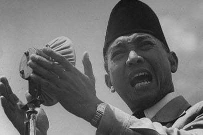

Sukarno[d] (/suːˈkɑːrnoʊ/ soo-KAR-noh,[4] Indonesian: [suˈkarno]; born Koesno Sosrodihardjo, Javanese: [ˈkʊs.nɔ sɔ.srɔ.di.har.dʒɔ], 6 June 1901 – 21 June 1970)[5] was an Indonesian statesman, orator, revolutionary, and nationalist who was the first president of Indonesia, serving from 1945 to 1967.
Sukarno was the leader of the Indonesian struggle for independence from the Dutch colonialists. He was a prominent leader of Indonesia's nationalist movement during the colonial period and spent over a decade under Dutch detention until released by the invading Japanese forces in World War II. Sukarno and his fellow nationalists collaborated to garner support for the Japanese war effort from the population, in exchange for Japanese aid in spreading nationalist ideas. Upon Japanese surrender, Sukarno and Mohammad Hatta declared Indonesian independence on 17 August 1945, and Sukarno was appointed president. He led the Indonesian resistance to Dutch re-colonisation efforts via diplomatic and military means until the Dutch recognition of Indonesian independence in 1949. As a result, he was given the title "Father of Proclamation".[6]